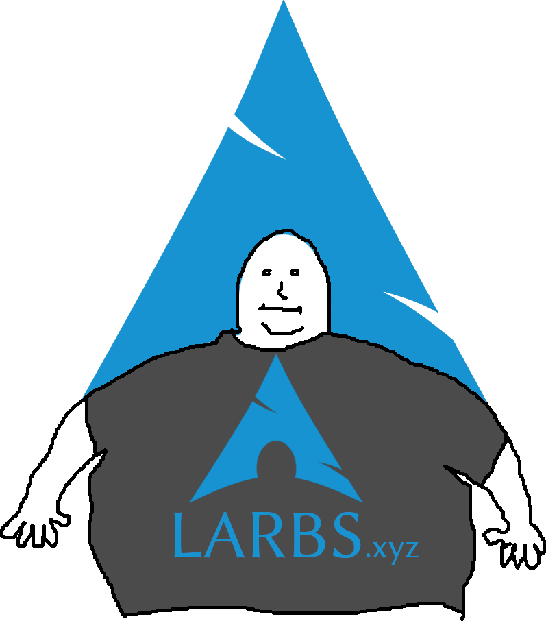

|  |
LARBS is an efficient shell script that will install a fully-featured tiling window manager-based system on any Arch Linux-based system, without any of the routine of manual post-install processes and configuration.
By default, LARBS installs and deploys my own personal dotfiles which people may know from my videos on YouTube.
But LARBS can also be forked on Github or given command line options to customize it for your own needs: you can have it deploy your own dotfiles and install all prerequisite programs, as LARBS only needs to read a single list of programs, and the script itself is designed to be easily rearranged.
On any (preferrably fresh) install of an Arch Linux-based distribution, just run the following as the root user:
curl -LO larbs.xyz/larbs.sh
bash larbs.sh
LARBS will then guide you through installation, which is typically relatively snappy. On my very slow internet, it takes around 10 minutes.
You can check out the programs list that LARBS parses for installation right here! It also gives a brief explanation of why the program is included.
Note that making your own fork of LARBS is as easy as using your own dotfiles, making a programs file like the one above, and making any other direct changes to the script you want.
You can figure out about the system in a lot of different ways:
super+shift+e.You can also ask me questions via email at luke@lukesmith.xyz.
I'll be posting updates about LARBS on my RSS feed.
{kind=link}